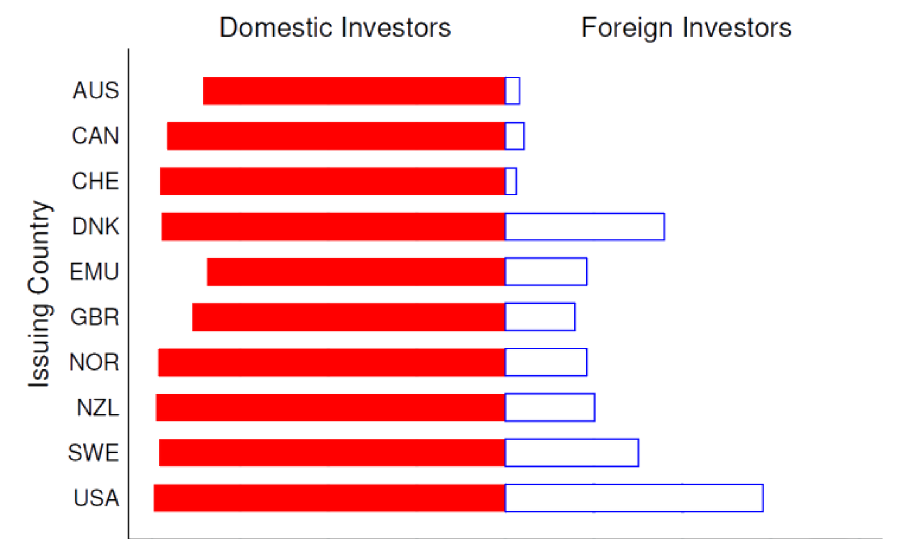
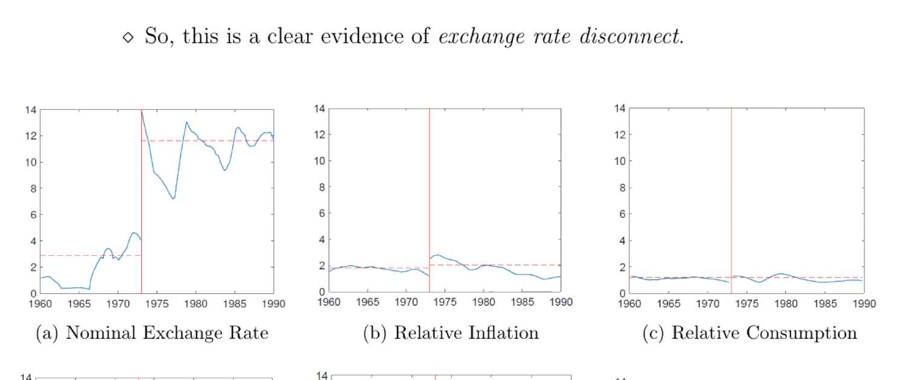
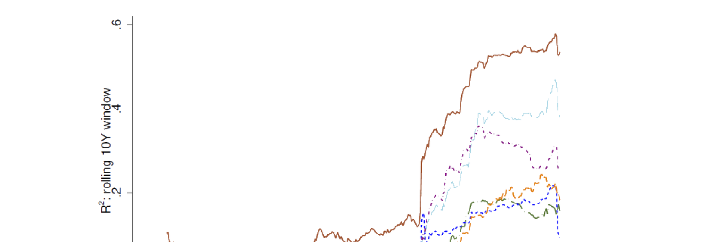

31. International Asset Pricing
本章用证券层面数据研究国际资产定价的两个实证现象。(§31.1) Maggiori et al. (2020) 研究全球债券持有中的本币偏好 (home currency bias)：用 Morningstar 跨 50+ 国基金/ETF 持仓数据发现——投资者持仓偏向本币计价债券；多数公司只以本币发债、无法直接获得外国资本；除美国外几乎所有目的国都如此；投资于全球的外国投资者倾向把组合中很大一部分配置于美元计价证券（美元偏好 dollar bias），且近年美元日益成为唯一的国际货币。(§31.2) Itskhoki-Mukhin (2019) 与 Lilley et al. (2019) 研究汇率的性质：前者复现 Mussa (1986) 谜题——1970 年代初布雷顿森林固定汇率瓦解后，名义与实际汇率波动率骤增（约 2% → 10%），而通胀、消费、产出、净出口等宏观变量波动率无可比变化，即汇率脱节 (exchange rate disconnect)；后者发现 2008 危机后汇率"重新挂钩" (reconnect)——美元广义指数与一组全球风险偏好代理（及美国对外国债券购买）的回归 \(R^2\) 在 2008 后显著上升并维持高位，支持"美元成为危机后国际货币"之说。
This chapter uses security-level data to study two empirical phenomena in international asset pricing. (§31.1) Maggiori et al. (2020) study home currency bias in global debt holdings: using Morningstar fund/ETF position data across 50+ countries, they find — investor holdings are biased toward their own currency; most firms issue only in local currency and have no direct access to foreign capital; this holds for most destination countries except the US; foreign investors who invest globally tend to allocate a large fraction of their portfolio to dollar-denominated securities (dollar bias), and in recent years the US dollar has become the only international currency. (§31.2) Itskhoki-Mukhin (2019) and Lilley et al. (2019) study properties of the exchange rate: the former replicates the Mussa (1986) puzzle — after the early-1970s breakdown of Bretton Woods fixed rates, the volatility of nominal and real exchange rates surged (about 2% → 10%), while macro variables like inflation, consumption, output, and net exports showed no comparable change, i.e. exchange rate disconnect; the latter finds the exchange rate "reconnects" after the 2008 crisis — the regression \(R^2\) of the broad dollar index on a set of global risk-appetite proxies (and US purchases of foreign bonds) rose dramatically after 2008 and stayed high, supporting "the dollar became the international currency after the crisis".
31.1 Home Currency Bias in Global Debt Holdings: Maggiori et al. (2020)
31.1.1 / 31.1.2 Key Points & Data
Maggiori et al. (2020) 用证券层面数据论证：投资者持仓偏向本币；多数公司只以本币发债、无直接外国资本渠道；除美国外的多数国家皆如此；投资全球的外国投资者通常把组合很大一部分配于美元计价证券（美元偏好）；近年美元成为唯一国际货币。数据：Morningstar 的完整持仓层面数据集（投资研究主要提供商之一，含 50+ 国共同基金与 ETF 的持仓；截至 2017 年 12 月约含美国约 9,000 只基金的 500 万笔持仓、其余地区约 52,000 只基金的 600 万笔持仓）。这些是投资股票、固收、商品、可转债、房产的开放式基金；剔除偶尔报告的衍生品持仓；标识符为 9 位 CUSIP。亦用 ICI（投资公司协会）数据：2017 年美国共同基金/ETF 约 22 万亿美元 AUM、非美约 19 万亿美元（Fig 31.1 美/非美固收基金 AUM）。为保代表性，作者聚焦 Morningstar 固收 AUM 覆盖不低于 ICI 报告四分之一的发达经济体、取按 AUM 计的头部国家。聚合用 Coppola et al. (2020) 算法（CUSIP、Capital IQ、SDC Platinum、Dealogic、Factset、Orbis）把公司聚合到最终母公司、标准化证券特征。
31.1.3 Investor Home Currency Bias
国家层面（Fig 31.2 各国投资者组合中以发行国本币计价的份额）：多数国内投资以本币计价（如加拿大公司向加拿大投资者的借款多以加元计）；除美国外，多数外国投资不以发行国本币计价（如非加投资者对加拿大公司的借款仅 5% 以加元计）。Fig 31.3：外国投资者倾向持有以自己本币或美元计价的债券（红条 = 外国债券头寸中以美元计价的份额，黑条 = 以本国货币计价的份额）。
31.1.1 / 31.1.2 Key Points & Data
Maggiori et al. (2020) use security-level data to show: investor holdings are biased toward their own currency; most firms issue only in local currency with no direct access to foreign capital; this holds for most countries except the US; foreign investors who invest globally typically allocate a large fraction of their portfolio to dollar-denominated securities (dollar bias); in recent years the dollar has become the only international currency. Data: Morningstar's complete position-level dataset (one of the largest providers of investment research, with mutual fund and ETF holdings in over 50 countries; as of December 2017, about 5 million positions held by ~9,000 US funds and ~6 million positions held by ~52,000 funds elsewhere). These are open-end funds investing in equities, fixed income, commodities, convertible bonds, and housing; occasionally reported derivative holdings are excluded; the identifier is the 9-digit CUSIP. They also use ICI (Investment Company Institute) data: in 2017 US mutual funds/ETFs had ~22 trillion USD AUM, non-US ~19 trillion (Fig 31.1 US/non-US fixed income fund AUM). For representativeness, the authors focus on developed economies where Morningstar's fixed-income AUM coverage is no less than a quarter of ICI's reported, taking the top countries by AUM. Aggregation uses the Coppola et al. (2020) algorithm (CUSIP, Capital IQ, SDC Platinum, Dealogic, Factset, Orbis) to aggregate firms to their ultimate parent and standardize security characteristics.
31.1.3 Investor Home Currency Bias
Country level (Fig 31.2 the share of each country's investor portfolio denominated in the issuer's currency): most domestic investment is denominated in local currency (e.g. a Canadian company's borrowing from Canadian investors is mostly in Canadian dollars); except for the US, most foreign investment is not denominated in the issuer's local currency (e.g. only 5% of non-Canadian lending to Canadian companies is in Canadian dollars). Fig 31.3: foreign investors tend to hold bonds denominated either in their home currency or in US dollars (red bar = the fraction of foreign bond positions in US dollars, black bar = in home currency).

证券层面：设 \(s_{j,p,c}\) 为母公司 \(p\) 发行的公司债 \(c\) 中由国家 \(j\) 投资者（2017 年）持有的份额，回归 (31.1)：
Security level: let \(s_{j,p,c}\) be the share of corporate bond \(c\) issued by parent \(p\) held by investors from country \(j\) (as of 2017), regression (31.1):
$$s_{j,p,c}=\alpha_{j,p}+\beta_j\cdot\mathbf 1\{\text{Currency}_c=\text{Currency}_j\}+\text{Controls}+\varepsilon_{j,p,c}\tag{31.1}$$
含母公司固定效应 \(\alpha_{j,p}\)（捕捉公司层面特征），\(\mathbf 1\{\cdot\}\) 示性该债是否以投资国货币计价。Fig 31.4：\(\beta_j\) 对所有国家显著为正——即公司内 (within-firm) 层面每只债券皆存在本币偏好（对同一发行公司，投资者更持本币计价的那只债），且稳健于其他样本选择/设定。基金层面（Fig 31.5）：投资外国市场公司债的基金，多数要么全投本币、要么全不投本币；多数此类基金把外国债投资集中于本币或美元计价债；与基金规模无关。
31.1.4 / 31.1.5 Firm Home Currency Bias & Rise of Dollar
外币债发行公司向外国人借款（Fig 31.6）：小公司通常以本币向国内投资者借；通过外币债借款的公司几乎全部向外国投资者借（沿 45 度线）；美国略不同——中型公司也全通过美元债借，但仍有很大外国投资者份额。仅本币债公司专向国内投资者借（除美国，Fig 31.7）：加、欧、英中红圈恒在蓝菱之上，即这些国家的仅本币公司把多数债配于国内基金而非海外基金；美国则约一半蓝菱在红圈之上，即美国仅本币公司把债无差别地配于美国基金与他国基金。
美元崛起、欧元衰落（Fig 31.8）：2008 后跨境债券中美元计价份额上升、欧元计价份额下降（纵轴为全球跨境公司债头寸总额中的份额）。
31.1.6 / 31.1.7 Contribution & Discussion
贡献：用巨量跨国开放式基金/ETF 持仓数据；对本币偏好做细致分析，识别基金侧与公司侧偏好的若干重要模式。讨论：选国时按全类型基金（股、固收、配置、货币）AUM 排名、阈值 10 略任意，但本文主关固收，故此过滤不太合理，宜按 Morningstar 数据代表性排名；关键假设"基金注册地 = 其投资者居住国"未必成立，若不成立部分结论失效；(31.1) 的 (2)(3)(4) 列无控制变量、略怪；Fig 31.9(b)（应为 31.5? 实指某图）突然转股票组合、股票结果与债券结果不太一致。可能扩展：研究基金何种特征决定本币偏好幅度；若货币风险是主因，理应有庞大金融机构提供（并盈利于）货币对冲业务，可考察是否有此类机构匹配潜在需求规模；可把方法应用于 2014 起的沪港通数据（2014 年 4 月 10 日后内地投资者可本地用人民币买港股、反之亦然），作为检验货币是否驱动股市本币偏好的准自然实验。
with parent fixed effects \(\alpha_{j,p}\) (capturing firm-level characteristics), \(\mathbf 1\{\cdot\}\) indicating whether the bond is denominated in the investor's currency. Fig 31.4: \(\beta_j\) is significantly positive for all countries — i.e. within-firm, every bond exhibits home currency bias (for the same issuer, investors hold more of the bond denominated in their home currency), robust to other sample selections/specifications. Fund level (Fig 31.5): funds investing in foreign-market corporate bonds mostly invest either all or none in their home currency; most such funds concentrate foreign bond investment in home-currency or USD-denominated bonds; independent of fund size.
31.1.4 / 31.1.5 Firm Home Currency Bias & Rise of Dollar
Foreign-currency debt issuers borrow from foreigners (Fig 31.6): small firms typically borrow from domestic investors in local currency; firms that borrow through foreign-currency bonds borrow almost entirely from foreign investors (along the 45-degree line); the US is a bit different — medium firms also borrow entirely through USD bonds but still have a large share of foreign investors. Local-currency-only firms borrow exclusively from domestic investors (except the US, Fig 31.7): in Canada, EMU, and UK the red circles are always above the blue diamonds, i.e. local-currency-only firms in these countries place most debt in local funds rather than overseas funds; in the US about half the blue diamonds are above the red circles, i.e. US local-currency-only firms place debt indifferently in US funds and funds elsewhere.
Rise of the dollar, fall of the euro (Fig 31.8): after 2008 the USD-denominated share of cross-border bonds rises and the euro-denominated share falls (vertical axis the share of global total cross-border corporate bond positions).
31.1.6 / 31.1.7 Contribution & Discussion
Contribution: a gigantic cross-country open-end fund/ETF position dataset; a detailed analysis of home currency bias, identifying several important patterns on the fund side and firm side. Discussion: when choosing countries, ranking by all-fund-type (equity, fixed income, allocation, money market) AUM with a cutoff of 10 is a bit arbitrary, but since the paper is mainly about fixed income this filter doesn't make sense and should rank by representativeness of the Morningstar data; the crucial assumption "the domicile of a fund equals the country of residence of its investors" isn't necessarily true, and if it breaks down some conclusions won't hold; the (2)(3)(4) columns of (31.1) have no control variables, which is weird; Fig 31.9(b) (a figure that) suddenly switches to equity portfolios, and the equity results aren't really consistent with the bond results. Possible extensions: study what fund characteristics determine the magnitude of home currency bias; if currency risk is the main reason, there should be a huge industry of financial firms providing (and profiting from) currency hedging, so it would be interesting to see if such firms match the magnitude of the potential demand; the methodology could be applied to Stock Connect data between mainland China and Hong Kong from 2014 (after 10 April 2014, mainland investors could buy HK-listed stocks locally with RMB, and vice versa), as a quasi-natural experiment to test whether currency drives home-biased investment in equity markets.
31.2 Properties of Exchange Rate: Itskhoki-Mukhin (2019) & Lilley et al. (2019)
31.2.1 Key Points
Itskhoki-Mukhin (2019)：复现 Mussa (1986) 谜题——布雷顿森林固定汇率制于 1970 年代初瓦解后，名义与实际汇率波动率骤升，而通胀（名义）、消费（实际）、产出（实际）、净出口（实际）等宏观变量无同步变化（Mussa 谜题）。作者用实证证明传统弹性价格 RBC 模型与黏性价格新凯恩斯模型皆被证伪，并给出一个分割金融市场 (segmented financial market) 的结构模型——名义汇率风险由一小群金融中介持有、未在经济中平滑分担。本章聚焦其实证部分。Lilley et al. (2019)：聚焦汇率脱节——难找与汇率强共动的经济变量（亦是 Itskhoki-Mukhin 实证焦点）。作者用多个全球风险偏好代理，发现其 2007 年前对汇率无样本内解释力、2007 年后有显著解释力；并发现美国对外国债券的购买 2008 后与这些风险代理及汇率高度相关，且该相关主要由对美元计价债券的全球投资驱动。故结果支持"美元在 2008 危机后成为国际货币"。
31.2.2 Data
Itskhoki-Mukhin (2019)：名义汇率、消费者价格、生产指数月度数据来自 IFM IFS；生产指数季节调整；净出口 = (出口−进口)/(出口+进口)；GDP、消费、进出口季度数据来自 OECD（实际、季节调整）；全部年化以使波动率（标准差）可比。1960:01–1971:07 为布雷顿森林"挂钩"期，1973:02–1989:12 为"浮动"期；中间 1971:08–1972:12 因 1971:08 "尼克松冲击"（1971:08 后美元对黄金直接可兑换性受限）排除、各国 1973:02 正式宣布浮动。Lilley et al. (2019)：IMF 国际收支 (BoP) 与国际投资头寸 (IIP) 公开数据，构造美国资本流动的季度度量；微观数据用 Maggiori et al. (2020) 的持仓数据（见 §31.1.2）。
31.2.3 Exchange Rate Disconnect after Peg-to-Float Shock: Itskhoki-Mukhin (2019)
布雷顿森林末期前后宏观变量波动率变化与汇率波动率变化不可比。作者用 18 个月（或 10 季度）滚动窗口移动平均估各变量 1973:01 前后标准差。由 Fig 31.9：名义与实际汇率波动率剧变（约 2% → 10%）；其余宏观变量无可比量级变化——汇率脱节的清晰证据。Itskhoki-Mukhin 亦把"其余世界"细分为加、法、德、意、日、西、英，多数情形这些国家宏观变量波动率未显著上升、而汇率波动率上升。最后发现美对其余世界的相对股票收益波动率在布雷顿森林末期前后无变化，且远期贴现谜题出现于布雷顿森林之后。
31.2.1 Key Points
Itskhoki-Mukhin (2019): replicate the Mussa (1986) puzzle — after Bretton Woods fixed rates broke down in the early 1970s, the volatility of nominal and real exchange rates surged, while macro variables like inflation (nominal), consumption (real), output (real), and net export (real) showed no simultaneous change (Mussa puzzle). The authors empirically falsify both conventional flexible-price RBC and sticky-price New Keynesian models, and provide a structural model of segmented financial markets — nominal exchange rate risk is held by a small group of financial intermediaries and not smoothly shared throughout the economy. This chapter focuses on the empirical part. Lilley et al. (2019): focus on exchange rate disconnect — it's hard to find economic variables strongly co-moving with the exchange rate (also the empirical focus of Itskhoki-Mukhin). Using a variety of global risk-appetite proxies, they find these had no in-sample explanatory power for the exchange rate prior to 2007 but significant power post-2007; and that US purchases of foreign bonds are highly correlated with these risk proxies and exchange rates since 2008, driven primarily by global investment in dollar-denominated bonds. So the results favor "the dollar became the international currency after the 2008 crisis".
31.2.2 Data
Itskhoki-Mukhin (2019): monthly data on nominal exchange rate, consumer prices, and production index from IFM IFS; the production index is seasonally adjusted; net export = (exports−imports)/(exports+imports); quarterly data on GDP, consumption, imports, and exports from OECD (real and seasonally adjusted); all annualized so volatilities (standard deviations) are comparable. 1960:01–1971:07 is the Bretton-Woods "peg" period, 1973:02–1989:12 the "float" period; the intermediate 1971:08–1972:12 is excluded because the "Nixon shock" (after 1971:08 the direct convertibility of the dollar to gold was limited) took place in 1971:08 and all countries officially declared floating in 1973:02. Lilley et al. (2019): IMF Balance of Payments (BoP) and International Investment Positions (IIP) public data to construct quarterly measures of US capital flows; micro data uses the Maggiori et al. (2020) holdings data (see §31.1.2).
31.2.3 Exchange Rate Disconnect after Peg-to-Float Shock: Itskhoki-Mukhin (2019)
The change in macro variable volatility around the end of Bretton Woods is not comparable to the change in exchange rate volatility. The authors estimate standard deviations of variables before and after 1973:01 using 18-month (or 10-quarter) rolling-window moving averages. From Fig 31.9: nominal and real exchange rate volatility changes dramatically (about 2% → 10%); other macro variables show no comparable magnitude of volatility change — clear evidence of exchange rate disconnect. Itskhoki-Mukhin also break down the rest of the world into Canada, France, Germany, Italy, Japan, Spain, and the UK, showing that in most cases these countries' macro variable volatility didn't significantly increase while the exchange rate volatility did. Finally they find no change in the volatility of relative stock market returns (US vs. rest of the world) before and after the end of Bretton Woods, and that the forward discount puzzle appeared after the end of Bretton Woods.

31.2.4 Exchange Rate Reconnect since 2008 Crisis: Lilley et al. (2019)
Lilley et al. (2019) 先复现 1977–2006 期的汇率脱节。用广义美元 (broad dollar)（贸易加权美元指数）度量美元对他币价值。广义美元 \(I_t\) 由 (31.2) 定义：
31.2.4 Exchange Rate Reconnect since 2008 Crisis: Lilley et al. (2019)
Lilley et al. (2019) first replicate the exchange rate disconnect in 1977–2006. They use the broad dollar (trade-weighted US dollar index) to measure the value of the dollar relative to other currencies. The broad dollar \(I_t\) is defined by (31.2):
$$I_t=I_{t-1}\times\prod_{j=1}^{N_t}\left(\frac{e_{j,t}}{e_{j,t-1}}\right)^{w_{j,t}}\tag{31.2}$$
\(N_t\) 为 \(t\) 时纳入计算的货币数、\(e_{j,t}\) 为货币 \(j\) 在 \(t\) 时的汇率（每美元兑货币 \(j\) 单位）、\(w_{j,t}\) 为货币 \(j\) 在 \(t\) 时的权重（按年更新，\(\sum_{j=1}^{N_t}w_{j,t}=1\)）。Fig 31.10：纵轴为 (31.2) 定义的广义美元季度对数变化（用 G10 除美国外九币等权评估），分别对利率差、通胀差、美国公司债信用利差（全球风险偏好度量）、美国对外国债券购买做散点——1977–2006 间四者皆与广义美元几乎无相关（即便抛补利率平价预示利率差与利差强负相关，实证亦近零）。
2008 后重新挂钩（六个全球风险偏好度量）：回归 \(\Delta\ln I_t=\alpha+\beta x_t+\varepsilon_t\)，\(x_t\) 取下列各风险度量之一。Fig 31.11 给该回归的 10 年滚动窗口 \(R^2\)——2008 危机间 \(R^2\) 骤升并维持高位。六个风险度量：GZ 利差（美国公司债信用利差）、VXO（S&P100 隐含波动率的月度对数变化）、S&P500（S&P500 对数总收益）、Treasury Premium（发达国政府债与美债的平均一年期抛补利率平价偏离，Du et al. 2018）、Global Factor（世界资产价格构造，Miranda-Agrippino-Rey 2015）、Intermediary Returns（纽约联储一级交易商持有公司价值加权组合，He et al. 2017）。
与美国外国债券购买重新挂钩：回归 \(\Delta\ln I_t=\alpha+\beta f_t+\varepsilon_t\)，\(f_t\) 为美国对外国债券的净购买；亦回归 \(f_t\) 对六个风险度量。Fig 31.12（\(f_t\) 对风险度量的 \(R^2\)）与 Fig 31.13（\(\Delta\ln I_t\) 对 \(f_t\) 的 5 年与 10 年滚动 \(R^2\)）皆显示 2008 后 \(R^2\) 骤升并维持数年——故广义美元也通过美国外国债券购买重新挂钩。
31.2.5 / 31.2.6 Contribution & Discussion
贡献：两文从两个角度展示汇率及其与基本面关系的实证模式，合起来给出汇率与宏观变量关系的全面视角；两文皆聚焦某重大国际事件前后的剧变（IM 2019 关注 1970s 初布雷顿森林终结，Lilley 2019 关注 2008 全球金融危机）；皆做了含多项稳健性检验的详尽实证。讨论：IM 2019 把挂钩期定到 1973:01–1973:02 不含（虽各国 1973:02 正式宣布浮动）的理由不清；许多变化不显著。Lilley 2019：(31.2) 广义美元用 G10 除美九币等权评估，但等权未必捕捉美元实际价值波动（高估小币、低估大币），宜用贸易加权显示稳健；"VXO" 用 S&P100 隐含波动率月度对数变化，但作者另用 S&P500 对数收益作风险度量，为何这里用 S&P100 不明；主用 \(R^2\) 展示重新挂钩，但 \(R^2\) 未必是单回归子与因变量关系的最佳度量。
\(N_t\) is the number of currencies included at \(t\), \(e_{j,t}\) the exchange rate of currency \(j\) at \(t\) (units of currency \(j\) per US dollar), \(w_{j,t}\) the weight of currency \(j\) at \(t\) (updated annually, \(\sum_{j=1}^{N_t}w_{j,t}=1\)). Fig 31.10: the vertical axis is the quarterly log change in the broad dollar defined by (31.2) (evaluated by equal weights for the nine G10-except-US currencies), scattered against the interest rate differential, inflation differential, US corporate bond credit spread (a measure of global risk appetite), and US foreign bond purchases — in 1977–2006 all four have almost no correlation with the broad dollar (even though covered interest rate parity predicts a strong negative relation between the rate differential and the differential, empirically it's near zero).
Reconnect after 2008 (six global risk-appetite measures): regression \(\Delta\ln I_t=\alpha+\beta x_t+\varepsilon_t\), \(x_t\) one of the following risk measures. Fig 31.11 gives the 10-year rolling-window \(R^2\) of this regression — during the 2008 crisis the \(R^2\) surges and stays high. The six measures: the GZ Spread (US corporate bond credit spread), VXO (the monthly log change in implied volatility on the S&P100), the S&P500 (the log total return on the S&P500), the Treasury Premium (the average one-year covered interest parity deviation between developed-country government bonds and US Treasuries, Du et al. 2018), the Global Factor (constructed from world asset prices, Miranda-Agrippino-Rey 2015), and Intermediary Returns (a value-weighted portfolio of holding companies of New York Fed primary dealers, He et al. 2017).
Reconnect with US foreign bond purchases: regression \(\Delta\ln I_t=\alpha+\beta f_t+\varepsilon_t\), \(f_t\) the net US purchases of foreign bonds; also regress \(f_t\) on the six risk measures. Fig 31.12 (\(f_t\) on risk measures' \(R^2\)) and Fig 31.13 (\(\Delta\ln I_t\) on \(f_t\)'s 5-year and 10-year rolling \(R^2\)) both show the \(R^2\) surging after 2008 and staying high for a couple of years — so the broad dollar is also reconnected through US foreign bond purchases.
31.2.5 / 31.2.6 Contribution & Discussion
Contribution: the two papers show empirical patterns of the exchange rate and its relation with fundamentals from two angles, together giving a comprehensive view; both focus on the dramatic change before/after a major international event (IM 2019 the end of Bretton Woods in the early 1970s, Lilley 2019 the 2008 global financial crisis); both conduct thorough empirical analyses with several robustness tests. Discussion: IM 2019's reason for defining the peg period such that 1973:01–1973:02 are excluded (though all countries officially declared floating in 1973:02) isn't clear; many changes are not significant. Lilley 2019: the broad dollar (31.2) is evaluated with equal weights for the nine G10-except-US currencies, but equal weights don't necessarily capture the actual value fluctuation of the dollar (overweighting small currencies, underweighting large ones), and trade-based weights should be used to show robustness; "VXO" is the monthly log change in implied volatility on the S&P100, but it's unclear why the authors use the S&P100 instead of the S&P500 given they also use the S&P500 log return as another risk measure; they primarily use \(R^2\) to show the reconnect, but \(R^2\) may not be the best measure of the relation between a single regressor and the dependent variable.

References
- Coppola, A., M. Maggiori, B. Neiman, and J. Schreger (2020). Redrawing the map of global capital flows: The role of cross-border financing and tax havens. NBER Working Paper.
- Du, W., J. Im, and J. Schreger (2018). The US Treasury premium. Journal of International Economics 112, 167–181.
- He, Z., B. Kelly, and A. Manela (2017). Intermediary asset pricing: New evidence from many asset classes. Journal of Financial Economics 126(1), 1–35.
- Itskhoki, O. and D. Mukhin (2019). Mussa puzzle redux. SSRN 3423438.
- Lilley, A., M. Maggiori, B. Neiman, and J. Schreger (2019). Exchange rate reconnect. NBER Working Paper.
- Maggiori, M., B. Neiman, and J. Schreger (2020). International currencies and capital allocation. Journal of Political Economy 128(6), 2019–2066.
- Miranda-Agrippino, S. and H. Rey (2015). US monetary policy and the global financial cycle. NBER Working Paper.
- Mussa, M. (1986). Nominal exchange rate regimes and the behavior of real exchange rates: Evidence and implications. Carnegie-Rochester Conference Series on Public Policy 25, 117–214.